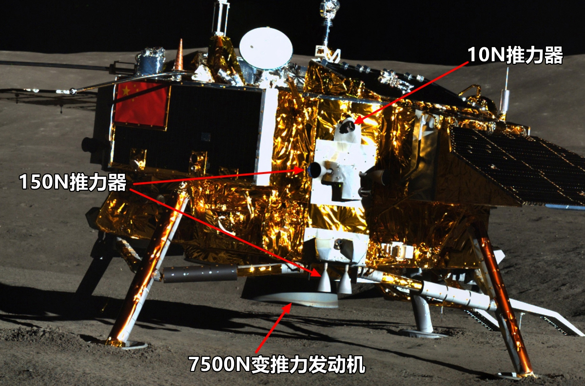
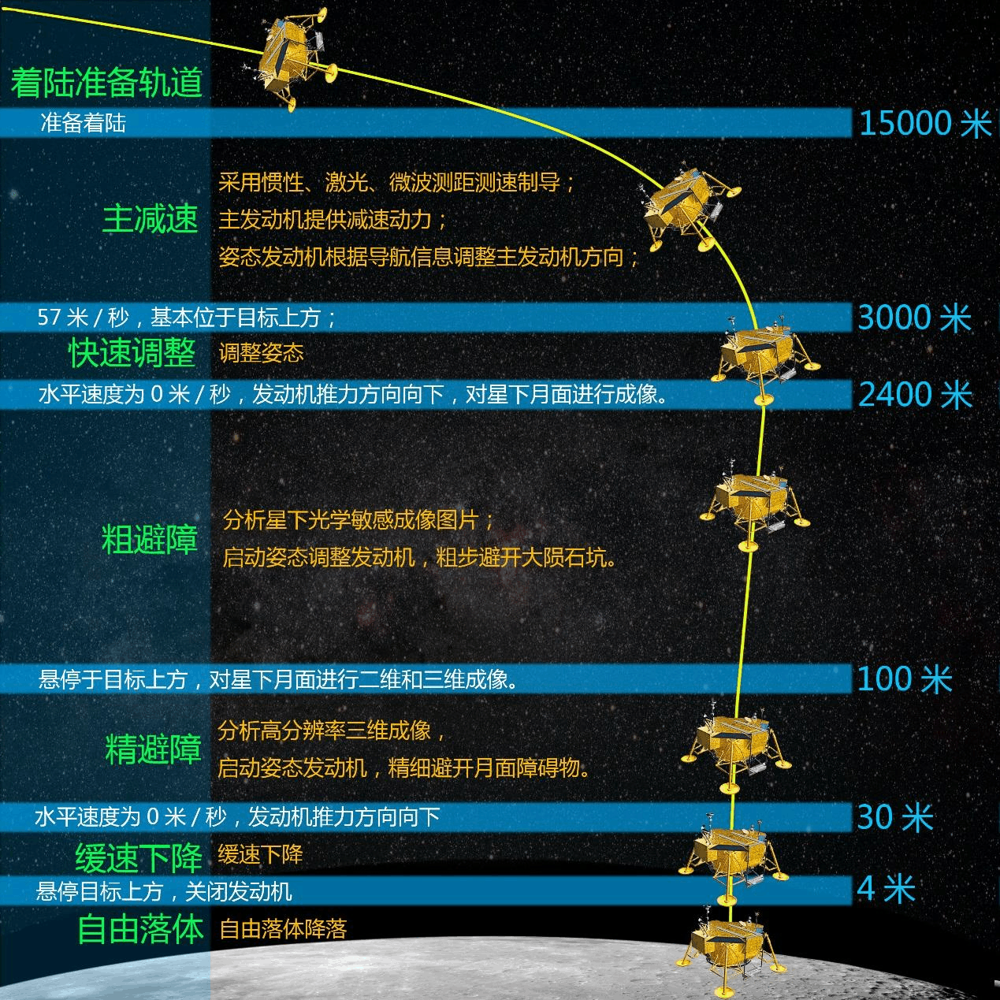
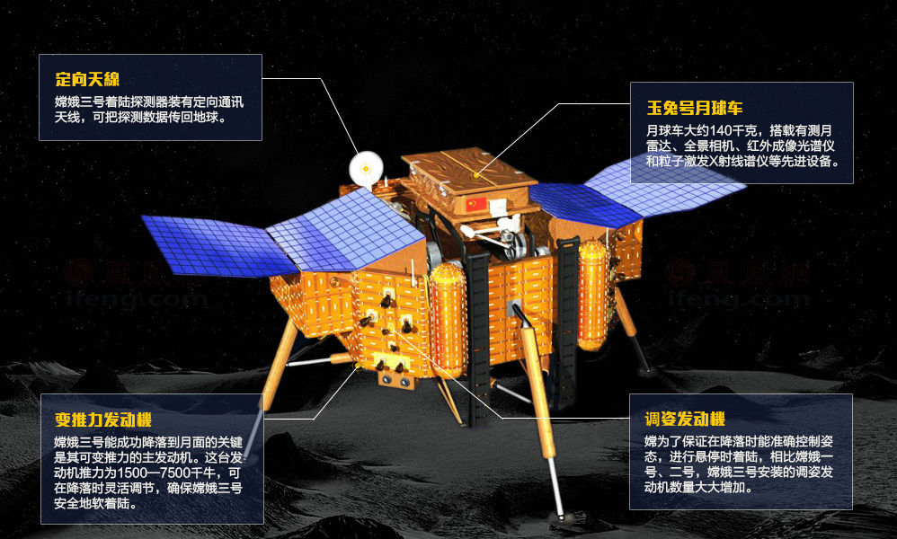

嫦娥三号是中国在2013年发射的一颗月球探测器，属于中国探月工程第二阶段，包括着陆器和月球车两部分，目标为实现在月球表面的软着陆。
嫦娥三号于2013年12月2日1时30分由长征三号乙运载火箭从西昌卫星发射中心成功发射，12月6日抵达月球轨道，12月14日带着中国的第一艘月球车——玉兔号成功软着陆于月球雨海西北部虹湾着陆区， 成为中国首个在地外天体着陆的探测器，也是继1976年前苏联的“月球24号”后首个在月球表面软着陆的探测器。
中国探月工程第二阶段
嫦娥三号是中国在2013年发射的一颗月球探测器，属于中国探月工程第二阶段，包括着陆器和月球车两部分，目标为实现在月球表面的软着陆。
嫦娥三号于2013年12月2日1时30分由长征三号乙运载火箭从西昌卫星发射中心成功发射，12月6日抵达月球轨道，12月14日带着中国的第一艘月球车——玉兔号成功软着陆于月球雨海西北部虹湾着陆区， 成为中国首个在地外天体着陆的探测器，也是继1976年前苏联的“月球24号”后首个在月球表面软着陆的探测器。

2013年12月2日（发射日）
2013年12月6日
2013年12月10日
2013年12月14日
2013年12月15日

